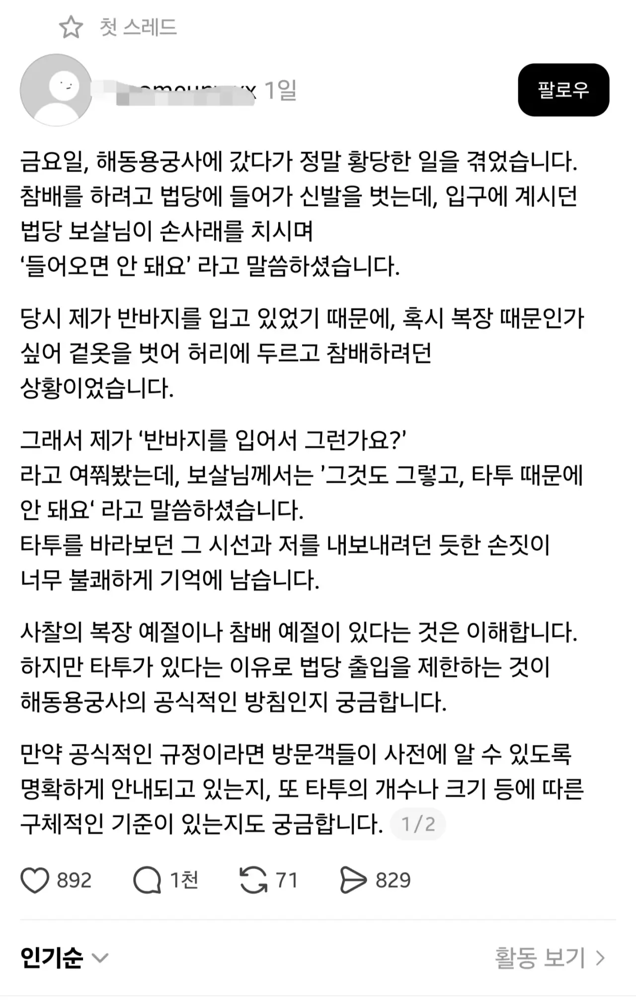
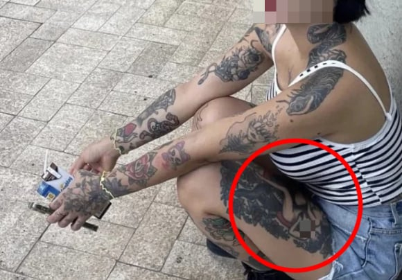

타투 하는 건 자유다 - 정상
타투로 몸에 칠갑을 하고 절에 들어가다 제지당한다 - 정상
타투를 저렇게 할정도면 정신병이다 - 정상
관심받고싶나보네
https://www.instagram.com/p/DYo13QIFOcN/
타투이스트네 그러면 좀 억울할수도..?
나도 문신충 극혐하지만 불교 이념 생각해보면 막는게 좀 그렇긴하네
문신을 하고싶어하는 사람에게 말해줘라 대부분 나만의 개성, 나의 자유 표현 이렇게 말하는데 사람들은 동굴에서부터 부족을 만들면서 구분짓고 무리짓는 습성이 있다. 문신을 하면 너의 개성이 아닌. 사람들 눈엔 단지 문신하지 않은 부족에서 문신한 부족으로 너가 옮겨간 것 뿐이다 개인의 독립이 아니다. 앞으로 문신한 사람들이 욕먹을 짓을 하면 넌 그 부족민으로써 같이 욕을 먹는다라고 그러면 대부분 조그만한 패션 문신으로 만족한다.
댓글 1페이지 안가는걸 추천
문신충한놈 개소리하고있네 ㅋㅋㅋㅋㅋ
문신 평균
문신충 징징글
시빨쌔끼들아 니들도 나 클럽 입뺀시키면서 똑같은거다 불경한자가 어딜 들어와 씨 빨
20년째 불교신자면 저런문신안할거같긴해
다른 신자들이 평온하게 종교활동할 권리도 있으니.. 거부에 타당한 이유가 있다교 생각함
논란이랑 별개로 자기 몸에 여자 가슴 드러낸 문신하는 인간은 정상인 범주로 볼수 없는거 아니냐
사찰 갔는데 저런 문신한 사람만 수백명 있으면 자기도 안들어갈거면서
이분 남자 두명이랑 욕조에 있는거 미친ㅋㅋㅋ
Q.E.D. (아님)